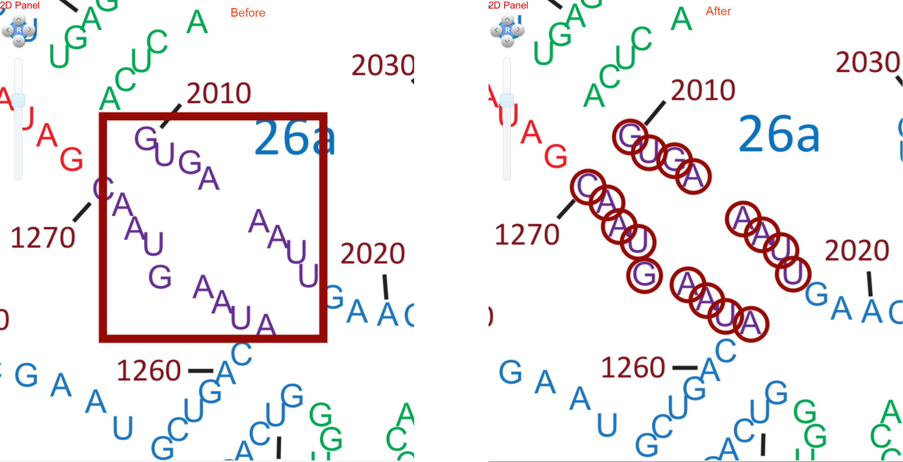
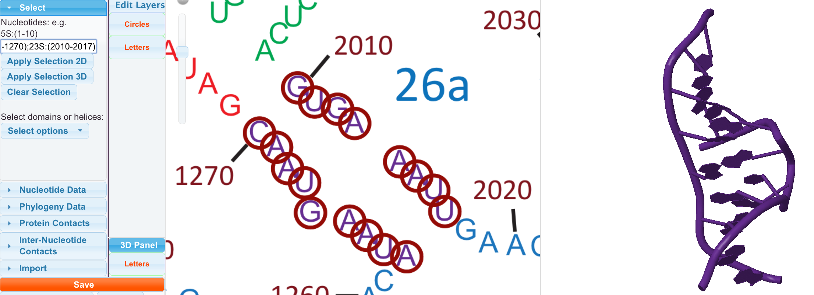
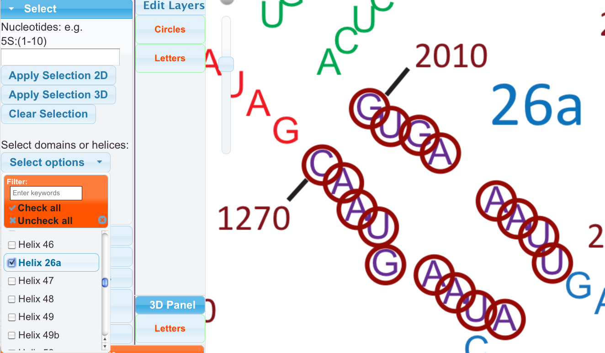

There are reasons to select sets of nucleotides. A selection can be used to highlight particular nucleotides, hide everything else in the Jmol, export a sequence, be manually colored, and more. There are three main ways to make a selection. These examples will show three different ways to select the nucleotides in Helix 26a.
There are two types of selection by mouse, both done the same way. You can individually select residues by right clicking on them. You can select multiple residues by right dragging a rectangle around them. Alternatively, select mode can be activated for the left mouse button by setting one button mode to select residues or by holding down Shift.
Sometimes, it may be more convenient to type in residue selections rather than select them with a mouse. So we have provided a way to type in selections. If you only want to select from the 23S, 25S, or 16S, providing the molecule name is optional. If you want to select from the 5S or 5.8S, providing the molecule name is mandatory. Hitting enter, clicking “Apply Selection 2D”, or clicking “Apply Selection 3D”, will add these selections to your “selected Selection”.
We select Helix 26a by typing in the residue numbers, similiar to the additional exaples below. We also clicked “Apply Selection 3D”, which caused the Jmol to show only Helix26a.
200 271F 23S:2104 5S:17
405-560 23S:(2105-2234) 5S:(56-104)
Multiple selections can be made at the same time by separating with semicolon (;).
102-340;23S:(2000-2100);5S:34;5S:(56-67).
This would select residues 102 through 340 and 2000 through 2100 for the 23S, residue 34 from the 5S, and residues 56 through 67 from the 5S.
You can also select predefined helices and domains. You may select the domains and helices in any combination that you like. There is a filter to type in names to help find the items you want to select. We select Helix26a by finding it in the list.

Selections can be named, colored, and applied individually. They can also now be saved for later retrieval. See the Save Section and the Selection Panel section. Use “Clear Selection” if you no longer want these residues selected.